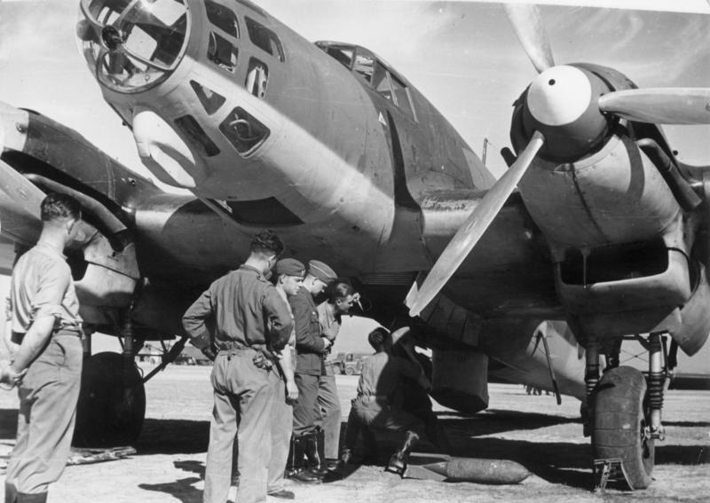
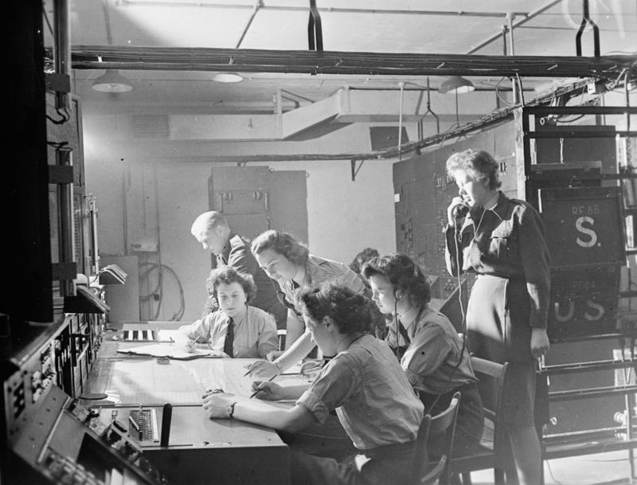
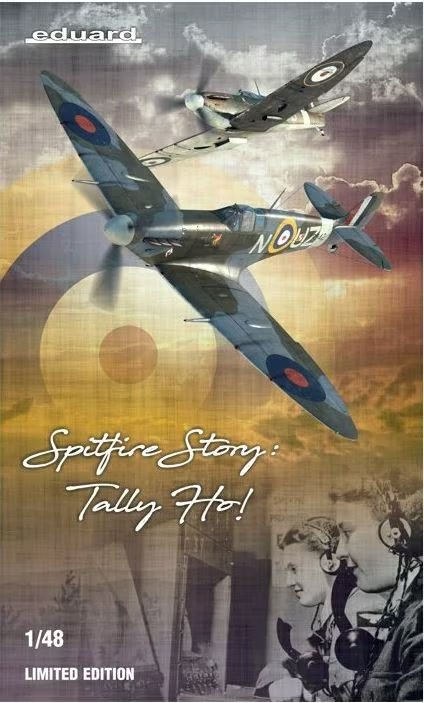
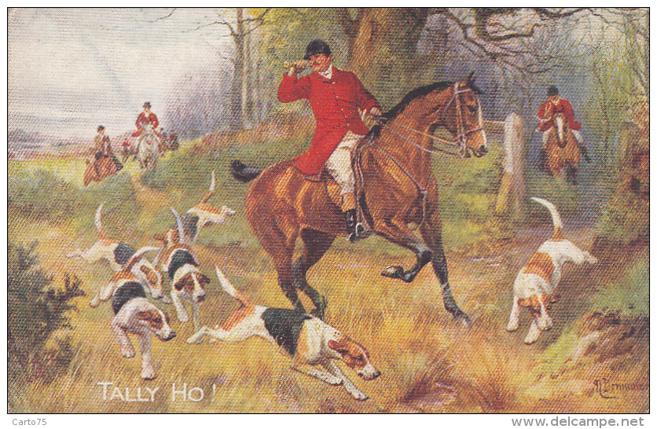
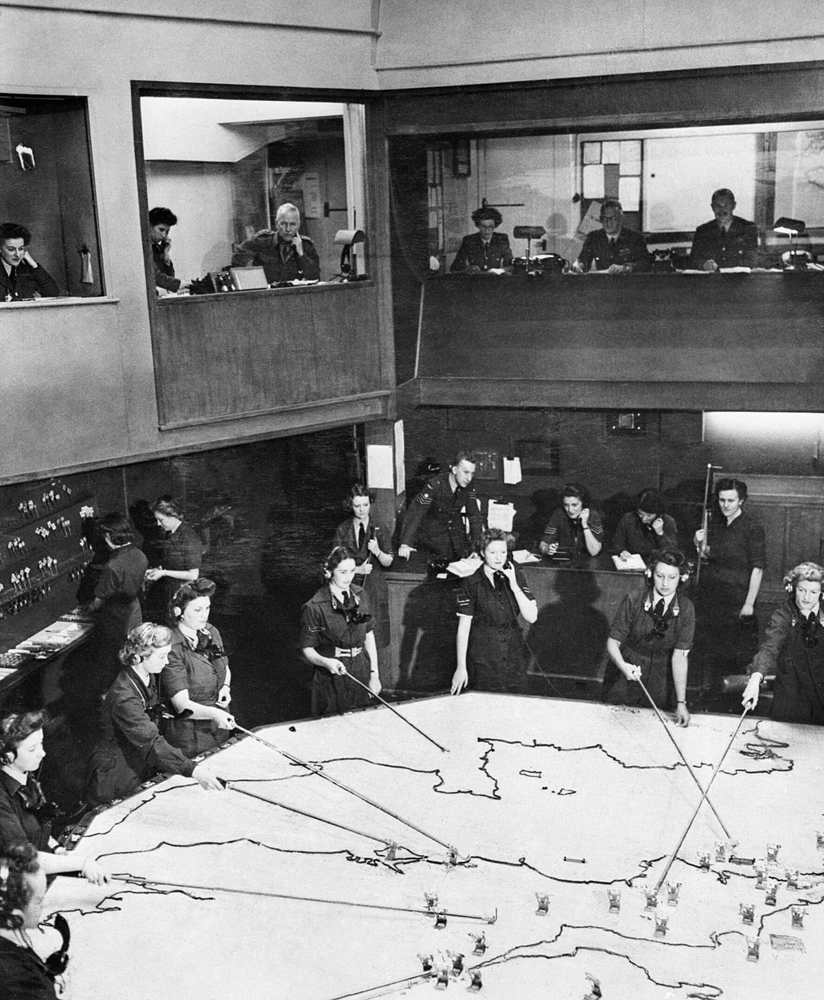
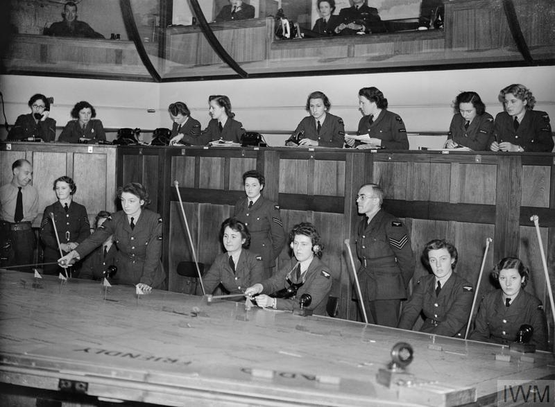
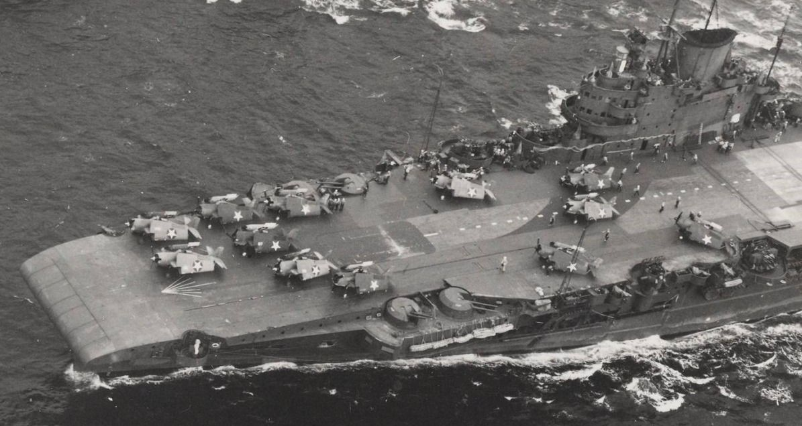
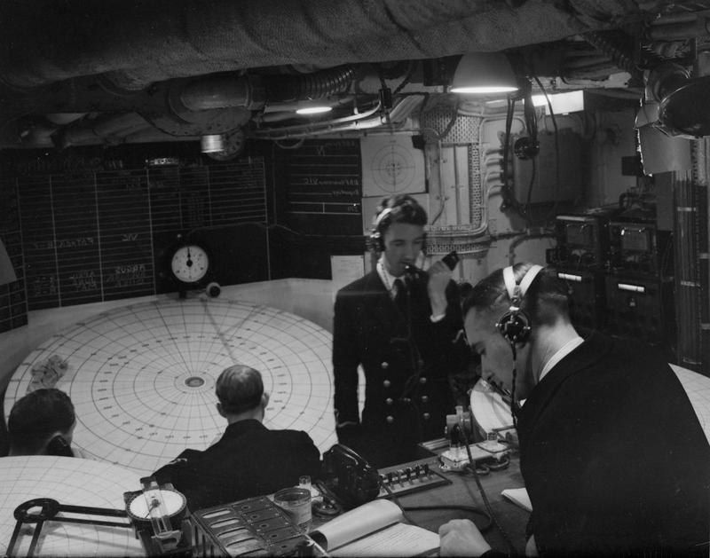
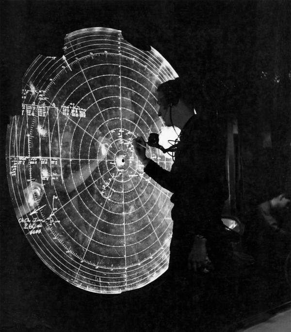
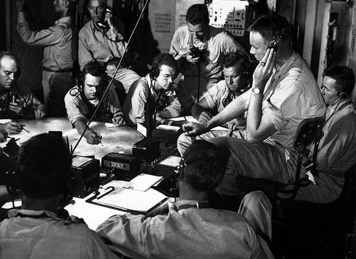

레이더 개발 이야기 (3) - 컴퓨터가 없던 시절, 방공망의 두뇌
게시: 2022-09-29T06:30:53+09:00
<영국 공군에 매버릭 따위를 위한 자리는 없다> WW2 초기 영국공군 전투기 사령부는 제한된 수의 전투기 편대로 독일공군 폭격기를 막아내기 위해 레이더를 적극 활용. 그러나 당시의 기술적 제한 때문에, 아무리 노력해도 레이더 화면에 최초로 독일 폭격기가 포착된 이후 방위각과 거리, 고도를 계산하여 그걸 음성 전화로 전투기 사령부에 전달하고, 그걸 다시 적정 위치의 공군 편대에게 보내어 그 편대장이 해당 좌표를 무전기에서 들을 때까지는 최소 3분이 걸림. 당시 He-111 폭격기 최대 속도가 440km/h 였으니, 그냥 360km/h로 계산해도 3분이면 약 20km를 이동할 수 있는 거리. 그 정도면 아무리 눈이 좋은 조종사라고 해도 목표물을 놓치기 좋을 정도의 오차.

(하인켈 (He-111) 폭격기)
따라서 레이더 관제소가 계속 그 폭격기를 추적하며 그 정보를 조종사에게 직접 실시간으로 계속 업데이트 해줘야 했음. 그러나 문제는 조종사들의 문화. 아무래도 조종사들은 지상 요원들을 좀 우습게 보는 경향이 있었는데, 특히 공군기지의 지휘관도 아니고 직접 얼굴을 맞댈 일도 없을 뿐더러 (여성 오퍼레이터들과 일하는, 남자답지도 못하고 사실상 군인이라고 말하기도 뭣한) 레이더 관제 요원들의 지시에 콧대 높은 조종사들이 고분고분 따른다는 것이 쉽지 않았음.

(레이더 기지국의 여성 작도사(plotter)들)
여기서 분연히 나선 것이 전투기 사령부의 책임자 다우딩 장군. 다우딩 장군은 일단 전투기 사령부가 특정 전투기 편대를 특정 레이더 관제소에 할당하면, 그 전투기 편대는 무조건 그 레이더 관제소의 지시에 절대 복종할 것을 엄명. 레이더 관제소에서는 독일 폭격기 뿐만 아니라 영국 전투기 편대도 추적하고 있었으므로 명령에 따르지 않고 '하늘에서 생각하면 죽어, 그러니 너의 직감을 믿고 그냥 저질러!'라며 지들 생각대로 움직이는 매버릭 같은 애들의 명령 불복종은 언제나 감시할 수 있었음. 마치 사무원들의 일거수일투족을 매니저가 CCTV로 노려보며 관리감독하는 마이크로 매니지먼트. 그러나 레이더 관제소의 마이크로 매니지먼트가 독파이팅 속에서도 계속될 수는 없는 일. 일단 적 폭격기를 눈으로 보고 자신들이 요격해야 하는 독일 폭격기가 맞는지 확인하는 책임은 편대장의 몫이었고, 편대장이 그걸 책임지고 확인하면 무전으로 "Tally-ho!"를 외치고 전투에 들어가게 되어 있었음. 그때서야 조종사들은 관제소의 강철 같은 통제에서 벗어나 자신들의 기량을 100% 발휘하며 공중제비를 돌 수 있었음.

참고로 탤리-호는 영국 전통의 메추리 사냥에서 메추리를 보았을 때 사냥꾼들이 서로에게 외치는 구호였는데, 이는 프랑스 귀족들이 사슴 사냥할 때 사냥개들을 흥분시키려 외쳤던 Taïaut (따이오)라는 구호에서 나온 것. 그 따이오는 다시 불어 taille haut (따이 오)에서 나온 것인데, taille는 '깎기, 칼날'이라는 뜻이고 haut는 높다는 뜻. 즉, 칼을 쳐드는 행위를 뜻함.

<어디서 본 듯한 갈퀴> WW2 초기 영국공군의 Chain Home 레이더 기지국들에서는 실시간으로 수많은 정보를 전투기 사령부에 전달. 그런데 쏟아져 들어오는 정보를 종합적으로 소화하고 우선순위를 판단하여 어느 전투기 몇 대를 어느 방면으로 파견할 지를 결정해야 하는 것은 쉬운 일이 아님. 그런 판단을 내리려면 아군 전투기 및 적 폭격기의 기종에 따른 최대 속도 등 상대적인 성능치는 물론 연료 잔량 등도 고려해야 함. 그러나 결정을 내려야 하는 나이 50 넘은 장군님들로서는 빠르게 읊어대는 다양한 사투리의 좌표 정보들을 알아듣는 것조차 버거움. 그러나 전통이라는 것이 괜히 있는 것이 아님. 레이더도 없던 시절인 WW1 당시 영국 포병대에서 영국 방공포 사령부로 자리를 옮겼던 Philip Edward Broadley Fooks라는 대위가 육안 관측병 및 청음소 등에서 포착한 정보로 독일군 제펠린 비행선 및 폭격기 습격 종합상황도를 이미 만든 바 있었음. WW2 초기 레이더 기지국에서 들어오는 정보도 바로 그 WW1 당시 Fooks 대위의 종합상황판에 그대로 투영됨. 적기 내습이 보고되면 그걸 넓은 상황판에 나무토막으로 만든 칩을 해당 위치에 놓아둠. 색깔과 모양 등으로 구분된 아군기와 적기 표시칩에는 작은 표지기를 꽂을 구멍이 뚫려 있어서 댓수나 속도 등의 세부 정보를 추가로 표시. 그리고 그 표지기도 5분 단위의 색깔별로 구분되어 있어서 보는 사람은 한눈에 저 정보가 대략 몇 분 전에 갱신된 정보인지 알 수 있었음. 그리고 이런 표시칩들마다 담당자가 붙어서 끊임없이 들어오는 정보에 따라 지도상에서 이동. 이때 서로에게 걸리적거리지 않도록 끝에 갈퀴가 달린 긴 막대를 사용했는데, 이 갈퀴막대는 사실 도박장에서 딜러가 큰 도박탁자에 놓여있던 칩을 긁어모을 때 사용하는 croupier's rake를 거의 그대로 사용한 것. 역시 전통의 나라.

(전투기 사령부(Headquarters Fighter Command) 지하에 위치했던 종합 상황실)
(Croupier's rake)
이런 종합상황판이 실시간으로 작도병들끼리 걸리적거리지 않고 효율적으로 갱신되려면 크기가 상당히 커야 했는데, 너무 크면 보는 사람이 한눈에 볼 수 없으므로 아예 2층을 따로 만들어 지휘관들은 그 위에서 내려다보며 상황을 파악하고 판단. 그리고 이 종합상황판은 별도의 로그를 만들 틈이 없었으므로 큰 진동이나 충격 등에 의해 판이 엎어지면 그것으로 끝장. 따라서 영국 본토 방위에 매우 중요했던 이런 종합상황판은 사령부 건물 내에서도 폭격으로부터 안전한 지하에 만듬. 전투기 사령부 뿐만 아니라 각 공군기지의 사령부 지하에도 동일한 정보를 받으며 똑같은 복제 상황판을 유지하도록 함.
이 종합상황판 하나의 운영에는 백여명의 요원들이 동원됨. 지금은 이 모든 것이 컴퓨터로 디지털 처리됨.

(컴퓨터가 등장하면 실직하실 분들...)
그러나 영국 공군 같은 경우엔 공간과 인원의 제약이 별로 없던 편. 문제는 좁고 인원도 제한된 군함에서는 방공 상황판을 어떻게 만드느냐 하는 것.
<저렇게 새파란 놈에게 이런 중요한 자리를?> 항모가 없는 함대의 현대적 방공 구축함에서는 적기의 습격이 탐지되면 그걸 면밀히 추적하다 요격이 결정되면 미사일을 발사하여 격추를 시도. 그러나 사거리가 짧은 대공포 밖에 없던 WW2 시절, 그런 미사일에 해당하는 장거리 요격무기는 바로 전투기 (물론 함대에 항공모함이 있을 경우에 국한). 결국 적편대의 습격을 조기에 정확하게 파악하여 언제 어느 정도의 편대를 어디로 보내느냐 하는 것은 미사일 유도에 버금가는 매우 중요하고 어려운 작업. 그리고 가장 중요한 것은, 현대적 방공 구축함과는 달리 컴퓨터와 각종 디지털 통신장비 없이 아날로그 레이더와 무선에 의한 음성 전달만으로 전투기 관제사 (Fighter Director Officer, FDO) 역할을 해내야 함. 생각해보면 미드웨이 해전에서 일본 해군이 한꺼번에 3척의 항공모함을 상실한 것이 바로 형편없는 전투기 관제 때문. 처음에 저공으로 내습해온 미군 뇌격기를 학살하느라 신이 나서 CAP(Combat Air Patrol)을 돌던 제로센 전투기들이 규율없이 모조리 저공으로 내려와 버리는 바람에 고공이 텅 비게 되었고, 바로 뒤이어 고공으로 내습한 미군 급강하 폭격기는 보잘 것 없는 일본군 대공포 외에는 아무 방해 받지 않고 활개를 침. 미국 입장에서는 그냥 운이 좋았다, 뇌격기 편대의 희생 덕분에 급강하 폭격기가 공을 세웠다 라고 할 수 있지만 사실은 전투기 관제가 하나도 안되는 일본 해군의 철저한 무능 덕분에 발생한 필연적 사건. 다만 미해군도 당시 FDO가 별로 인상적이지 않은 것은 마찬가지. 미드웨이에서 USS Yorktown을 잃은 것도 사실 형편없는 FDO 때문.

(미드웨이 해전에서 일본 함재기의 어뢰에 얻어맞는 USS Yorktown (CV-5))
그런 전투기 관제 방면에서 초석을 닦은 것은 역시 로열네이비. 미해군은 항공모함에 이미 훌륭한 레이더를 장착하고도 FDO를 어떻게 해야할지 몰라 과달카날과 산타크루즈 해전 등에서 실수를 연발. 그러다 미개한 미해군에게 '이것이 선진 해군이다'라는 것을 보여준 것이 HMS Victorious. 산타 크루즈 해전에서 USS Hornet이 격침되고 USS Enterprise도 크게 파손된 덕분에 태평양에는 USS Saratoga 딱 1척만 남게 된 미해군은 급한 나머지 1942년 12월 로열 네이비에게 빅토리어스를 임대. 1943년 초부터 태평양에서 미해군 와일드캣 전투기들을 싣고 USS Robin이라는 별명으로 활약한 빅토리어스는 미해군에게 'fighter direction center'라는 것이 무엇이고 이게 얼마나 효율적인지를 미해군 조종사들에게 자연스럽게 알려줌.

(USS Robin이라는 별명으로 미해군에 임대되어 미해군 F4F Wildcat을 탑재하고 있는 HMS Vicrtorious)

(HMS Vicrtorious의 fighter direction center. 뭔가 있어 보이지만 진짜 다급해보이지는 않음.)
여기에 깊은 감명을 받은 미해군에서도 당장 USS Enterprise와 Saratoga 같은 기존의 낡은 항모에도 함장 책임 하에 fighter direction center를 설치하라고 지시. 이것이 현대적 군함에 다 있는 CIC (Combat Information Center)의 선조. 물론 새롭게 막 취역하기 시작하던 Essex급 항모들은 설계부터 fighter direction center를 반영. 그런데 청출어람이 바로 미국인들의 특징. 엄청난 수의 적기와 싸워본 경험이 부족했던 영국 항모들과는 달리 좁고 불편했던 fighter direction center를 그대로 쓰지 않고 계속 개량과 혁신을 도입. 가장 대표적인 것이 수평 종이판이 아니라 수직으로 세운 유리 상황판.

("왜 영국놈들은 이걸 생각해내지 못했지?" 미해군의 혁신. 수직 유리 상황판)
그리고 그 항모의 중앙 컴퓨터 역할을 인간의 두뇌로 해야 했던 결정권을 가진 director 자리는 계급 위주가 아니라 순발력과 머리 회전에서 유리한 비교적 젊은 중령급 장교를 앉힘. 그리고 좁고 낮은 군함 선실에서 최적의 작업 조건을 만들어 director 좌석도 따로 설계.

(USS Lexington (CV-16)의 Fighter Director Officer인 Allan F. Fleming 중령. 정말 뛰어난 director였다고. 얼마나 뛰어난 두뇌의 director를 가졌느냐 여부가 그 항모의 요격 능력에 결정적인 영향을 끼쳤음. 얼마나 잘 학습된 인공지능을 가졌느냐에 따라 항공기든 미사일이든 군함이든 그 성능을 좌우하는 날이 결국 올 것.)